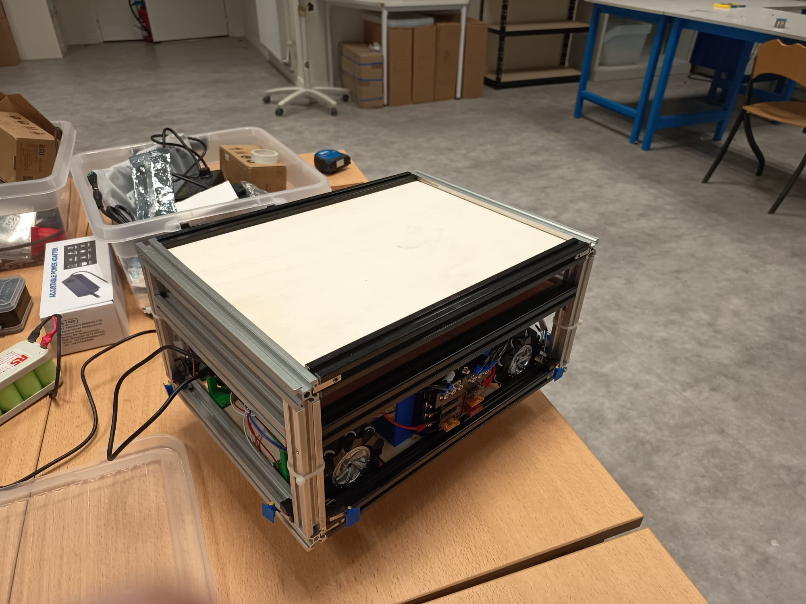
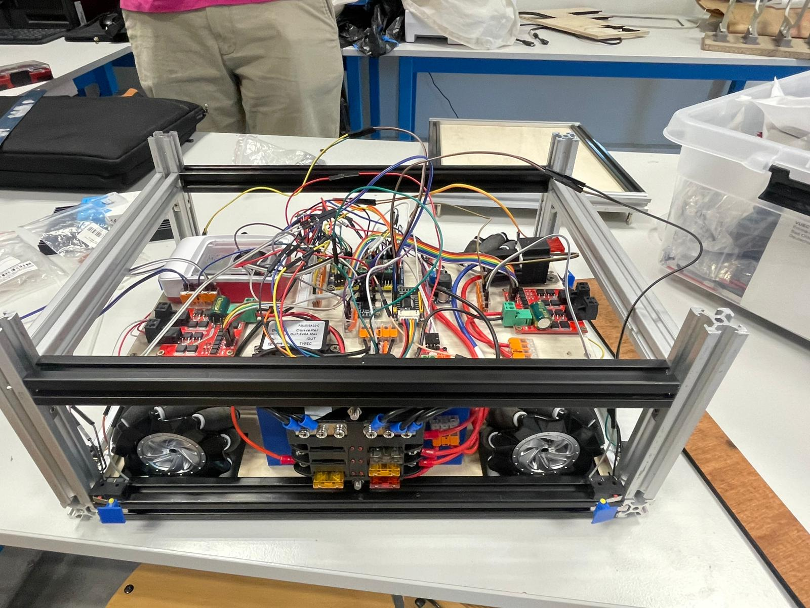
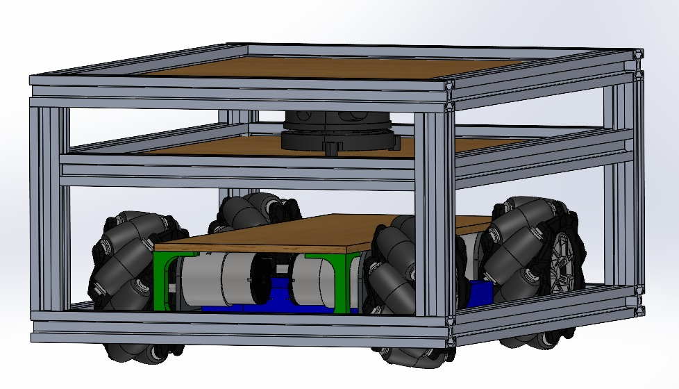
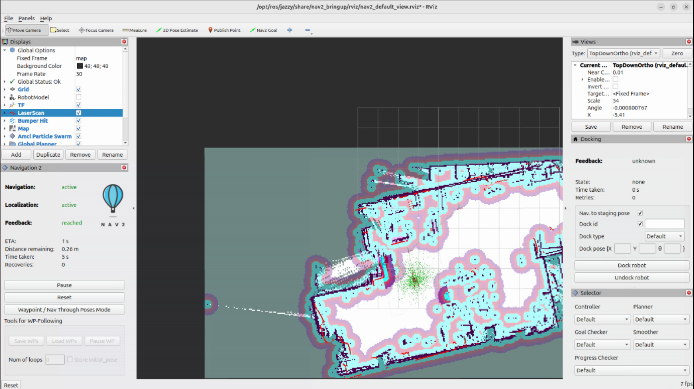
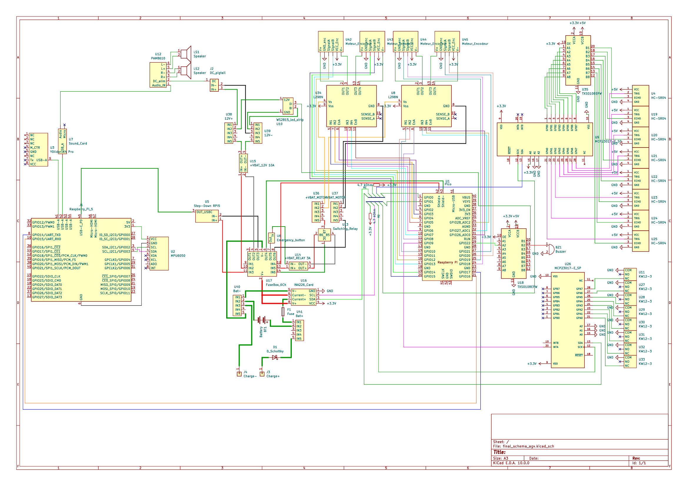

Un AGV autonome conçu pour automatiser le transport de kits d'outillage entre la zone de maintenance et les postes CNC, intégrant LIDAR 360°, ROS2 Jazzy et SLAM temps réel.
L'AGV VALO est un véhicule à guidage autonome conçu dans le cadre d'un projet mécatronique pluridisciplinaire à l'ICAM. Application concrète et synthétique de la mécatronique au carrefour de la mécanique de précision, de l'électronique embarquée et de l'automatisme & robotique.
Contexte industriel : Dans les ateliers de production modernes, la logistique interne est un enjeu critique. Le transport manuel de kits d'outillage (fraises, interfaces, porte-outils) entre la zone de maintenance centralisée et les unités CNC génère des pertes de temps, des erreurs de livraison et mobilise du personnel sur des tâches à faible valeur ajoutée.
Mission de l'AGV : Automatiser ce flux logistique en transportant de façon autonome des kits d'outillage de ≤ 5 kg, de manière répétable, fiable et tracée — libérant les techniciens pour des activités de supervision et résolution de problèmes complexes.
Déplacement sans intervention humaine grâce à la fusion LIDAR et odométrie. Planification de trajectoires avec évitement d'obstacles en temps réel.
Construction dynamique d'une carte de l'environnement pendant le déplacement. Localisation simultanée pour une précision centimétrique.
Pack Li-Ion 4S4P 16,8V max avec BMS actif 4S 20 A. Mesure temps réel de la tension et du courant.
Arrêt d'urgence câblé physiquement indépendant du logiciel — bumpers fonctionnent même en cas de crash RPi5 (géré par Pi pico). Fusibles et BMS.
RPi5 (ROS2 Jazzy, Nav2, haut niveau) + RPi Pico (capteurs, moteurs, bas niveau). Intégration de nomachine, contrôle distanciel via Hotspot RPi5 et Wifi (Rviz).
Châssis double étage à clips coulissants : démontage avec outils classiques. Possibilité d'amélioration avec lumière et son.
Concevoir et réaliser un AGV prototype capable de transporter des kits d'outillage légers (fraises, interfaces, porte-outils) entre une zone de maintenance centralisée et des postes CNC, de façon autonome et répétable.
Définition des exigences fonctionnelles et techniques. Identification des contraintes liées à l'environnement industriel simulé, à la sécurité, et à l'autonomie énergétique.
Dimensionnement du châssis en aluminium, choix des motoréducteurs, conception du circuit de puissance isolé de la partie commande. Création des schémas électriques et vues CAO.
Mise en place de l'architecture ROS2 Jazzy. Développement des nœuds de perception, localisation et navigation. Intégration de Nav2 et paramétrage du SLAM avec le YDLidar X4 Pro.
Assemblage mécanique et câblage. Tests unitaires de chaque sous-système, puis intégration progressive. Validation du comportement en environnement de test simulé.
Réalisation de missions complètes en boucle fermée. Mesure des performances (précision, autonomie, temps de mission). Préparation de la démonstration en conditions réelles.
Ossature profilés alu + panneaux fins coulissants, triple niveau, accès sans outil spécialisé. Stock de profilés disponible.
3 types comparés : brushed (simple, bon couple, lourd), brushless (excellent rendement, coûteux), pas-à-pas (précis, onéreux). Brushed retenu pour le rapport coût/performance dans le budget de 1 500 €. Réducteur nécessaire pour atteindre le couple suffisant à 0,4 m/s.
Tension 16,8V max (standard AGV). Architecture 4S4P pour équilibrer autonomie et courant de décharge. BMS passif 4S 20 A pour équilibrage entre cellules et protection.
4 solutions comparées. RPi5 seul (Sol.1) : trop risqué en cas de crash logiciel. Sol.3 modulaire : trop complexe et coûteuse. Sol.2A retenue : RPi5 pour le haut niveau (ROS2, Nav2, supervision) + RPi pico pour le bas niveau (bumpers, moteurs, capteurs). Bumpers garantis même en cas de plantage RPi5.
Solution retenue : Wifi + Hotspot pour assurer la communication sans fil et l'accès à l'interface utilisateur.
Solution retenue : 4 roues motrices mécanums pour un déplacement efficace et précis dans les environnements complexes.
Le prototype final réalise des missions de transport autonome en boucle fermée dans l'environnement de test. Il atteint les objectifs définis sur rviz.
L'autonomie mesurée en conditions réelles est d'au moins 2h30, dépassant les 2h spécifiées dans le cahier des charges.
Intégration complète de la chaîne perception–décision–actuation sous ROS2. Le nœud de navigation combine Nav2, un LIDAR YDLidar X4 Pro, IMU et des encodeurs roues pour une localisation robuste.
Le circuit de puissance a été conçu avec une isolation entre la partie commande et la partie moteurs.
Difficulté de démontage à cause de la nécessité de retirer plusieurs éléments pour accéder aux composants internes (dû au besoin de rigidité châssis).
Nécessité de filtrer les montants de la structure pour éviter la paranoïa de l'agv. Paramétrage difficile pour le rendre persévérant.
Protocole hardcodé avec des bytes fixes, rendant la maintenance, les ajustements et les améliorations plus complexes.
Impossible de le mettre en place avec la structure initialement prévu car level-shifter incompatible. Nécessité de repenser l'architecture électronique.
Difficile à paramétrer avec dérive dû à la gravité terrestre et aux glissements. défaut compensé par le lidar.
Le Raspberry Pi 5 gérant simultanément ROS2, Nav2 et SLAM montait en température lors de missions longues. Le venitlateur compense mais la saturation des capacités de traitement et de calcul de la RPI5 est fréquente.




